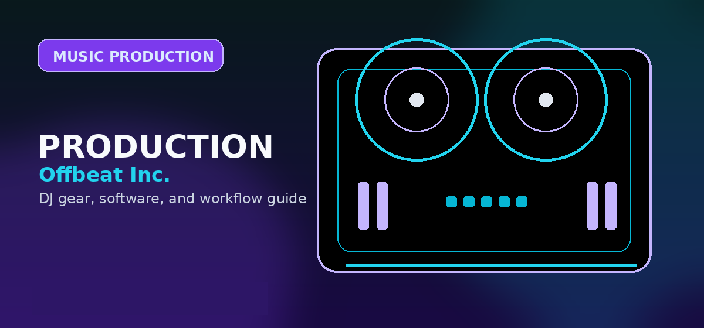

Best Affordable VST Effects Plugins for Music Production in 2026: Top EQ, Compressor, and Reverb
Best music production plugins 2026 — top VST effects, EQ, compressor, and reverb picks for affordable studio-quality sound.

Disclosure: This page uses affiliate links. We may earn a commission at no extra cost to you. Full disclosure →
Entering the music production world in 2026 no longer requires a massive financial investment in outboard gear or overpriced software suites. The gap between "budget" and "professional" has virtually vanished, thanks to a new wave of high-efficiency VSTs that prioritize transparency and CPU optimization. Whether you are scoring a cinematic project in your bedroom or mixing a techno track for a club, the right set of utility plugins—specifically a surgical EQ, a versatile compressor, and a lush reverb—forms the backbone of any professional mix. The challenge today isn't finding a tool that works, but choosing the one that offers the best sonic return on investment. This guide cuts through the marketing noise to highlight the most affordable, high-performance effects plugins that will define your sound this year.
Precision Equalization: The Foundation of Clarity
In 2026, the standard for affordable EQ has shifted toward dynamic processing. While static EQs are useful, the ability to carve out frequencies only when they clash is essential for a modern, polished mix. TDR Nova remains a powerhouse in the budget category, offering a parallel dynamic EQ that allows you to tame harsh peaks without killing the overall energy of a track. For those willing to spend slightly more during a sale, FabFilter Pro-Q 3 continues to be the industry benchmark due to its intuitive workflow and surgical precision. The key to a great EQ strategy is removing "mud" (200-500Hz) and adding "air" (10kHz+) without introducing phase distortion, a feat these plugins handle with ease.
Dynamic Control: Glueing Your Mix with Compression
Compression is often the most misunderstood tool in the box, but in 2026, "intelligent" compression has made it accessible. For those seeking a transparent, "invisible" glue for their master bus or vocals, TDR Kotelnikov is an unmatched free-to-paid option that avoids the pumping artifacts found in cheaper emulations. If you are looking for character and "vibe," the Klanghelm DC1 offers a streamlined interface that focuses on the sonic result rather than endless knobs. Modern compression is less about technical settings and more about controlling the peak-to-average ratio. By utilizing these tools, you can ensure your drums hit hard and your vocals sit prominently at the front of the mix without clipping your headroom.
Creating Space: Lush and Atmospheric Reverbs
Reverb is where a dry, lifeless recording becomes an immersive experience. In the current landscape, Valhalla VintageVerb remains the gold standard for affordability, offering an incredible array of 80s-style algorithms and modern halls for a fixed, low price. While convolution reverbs (which use samples of real rooms) are great for realism, algorithmic reverbs like Valhalla allow for the "hyper-real" spaces common in modern pop and electronic music. The trick for 2026 is utilizing a "reverb send" rather than putting the plugin directly on the track; this allows you to EQ the reverb itself, removing low-end rumble and ensuring the space feels deep rather than cluttered.
The 2026 Budget Strategy: Bundles vs. Boutique
The biggest mistake new producers make is buying massive "everything" bundles filled with plugins they will never use. The trend for 2026 is "Boutique Utility"—buying 3-4 exceptional, specialized tools rather than 100 mediocre ones. Companies like MeldaProduction offer incredibly powerful free bundles that can replace almost any paid utility, allowing you to save your budget for high-end "character" plugins. Focus your spending on tools that offer a distinct sonic signature or a workflow that saves you time. Prioritize plugins that support GPU acceleration and high-sample rates, ensuring your setup remains future-proof as your project complexity grows.
2026 VST Recommendation Comparison
| Plugin | Category | Estimated Price | Key Pro | Key Con |
|---|---|---|---|---|
| TDR Nova | Dynamic EQ | Free / $50 | Surgical precision | Steeper learning curve |
| FabFilter Pro-Q 3 | Parametric EQ | $179 | Best-in-class UI | Higher price point |
| TDR Kotelnikov | Compressor | Free / $40 | Zero-latency transparency | Lacks "vintage" grit |
| Klanghelm DC1 | Compressor | $30 | Fast, intuitive workflow | Limited advanced routing |
| Valhalla VintageVerb | Reverb | $50 | Massive sonic variety | No convolution options |
Quick Verdict
- The Absolute Beginner: Start with the TDR Nova (Free) and Valhalla VintageVerb. These two tools cover 80% of your mixing needs with minimal investment.
- The Pro-on-a-Budget: Invest in FabFilter Pro-Q 3 and Klanghelm DC1. The time saved by the Pro-Q 3 workflow justifies the cost, while the DC1 adds professional weight to your tracks.
- The Sound Designer: Go for the MeldaProduction Free Bundle paired with Valhalla VintageVerb to create complex, evolving atmospheric spaces.
Investing in your toolkit is about quality over quantity. By focusing on these essential EQ, compression, and reverb tools, you can achieve a professional, radio-ready sound without draining your bank account. Ready to upgrade your studio? Check out the latest deals and download your copies via the affiliate links below to start sculpting your signature sound today.
Bottom line: Build your plugin chain around Serum (wavetable synthesis), Ozone 11 (mastering), and Valhalla Room (reverb) -- these three cover 90% of professional production needs. All are available on Plugin Boutique with regular sales. Search Akai MPK Mini production controller on Amazon →
Shop on Amazon
Find music production bundles on Amazon — Native Instruments, iZotope, and more.
Content verified and updated for 2026. All product links checked for availability and pricing accuracy.
Have a question not covered in the FAQ? Check our DJ Software FAQ or Beginner DJ Hub for more information.
Frequently Asked Questions
What plugins should every music producer have?
Essential categories: A good EQ (FabFilter Pro-Q 3), Compressor (Pro-C 2 or SSL G-Comp), Reverb (Valhalla Room), Limiter (Ozone or Pro-L 2), and a multiband saturator.
Are free plugins good enough for professional music?
Yes. Plugins like TDR Nova (EQ), Limiter No6 (limiting), and MFreeEffectsBundle are professional quality. No budget should stop you from making good music.
What is the most popular music production plugin?
FabFilter Pro-Q 3 (EQ) is considered the industry standard by most pros. For synthesis, Serum by Xfer Records is the most widely used software synthesizer.
How much should I spend on plugins?
Focus on learning stock plugins first — most DAWs include excellent ones. A budget of $100–$300 can get you FabFilter Pro-Q 3 + a quality reverb, which is all you need for professional results.
Do plugins make you a better producer?
No. Skills make you a better producer. Plugins solve specific technical problems or inspire creativity but can't replace understanding fundamentals like EQ, compression, and arrangement.